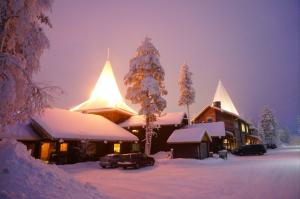

圣诞老人村

圣诞老人村（Santa Claus Village），位于芬兰的拉普兰地区罗瓦涅米（Rovaniemi）以北8公里处的北极圈上，地图上标有66°32' 35" 字样的白色标线就是北极圈的纬度。
每年源源不断的游客从世界各地涌向这里，以一睹圣诞老人的风采为快。在圣诞老人村的礼品店里，游客可以买到带有芬兰特点，设计精美的礼品。还可以得到一张跨越北极圈的证书。令人兴奋的还有圣诞老人邮局里各种充满童话色彩的邮票，贺卡和礼品等。寻访圣诞传奇的人当然乐意搜购作为礼物带回家。所有人从此处寄出的信件，也会特别盖上北极圣诞老人邮局的邮戳。